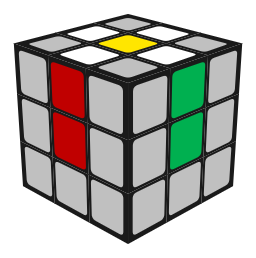

三阶魔方教程 · 初级
层先法：一层一层来，七步把魔方复原。不需要记很多公式，看懂每一步在干什么就行。
先认识魔方
 UFR
UFR
三阶魔方有 6 个中心块、12 个棱块、8 个角块。中心块永远不动——所以「白色面」 就是白色中心所在的那一面，转来转去它还是白色面。
颜色是对着的：白对黄、红对橙、蓝对绿。本站的配色表就是这一套。
公式记号
字母表示「把哪一面顺时针转 90°」，都是面对那一面看的时候的顺时针：
| 记号 | 意思 |
|---|---|
R L | 右面 / 左面顺时针 90° |
U D | 上面 / 下面顺时针 90° |
F B | 前面 / 后面顺时针 90° |
R' | 带一撇 = 反过来（逆时针）90° |
R2 | 转 180°（顺逆都一样） |
x y z | 整个魔方跟着转：x 跟 R 同向、y 跟 U 同向、z 跟 F 同向 |
1白色十字
目标：底面拼出一个白色十字，而且每条白棱的侧面颜色和同侧的中心块对齐。
先不管别的块。把四条白棱都转到黄色中心那一面，摆成一朵「小花」：

然后一条一条处理：把某一瓣的侧面颜色转到和它同色的中心块对齐，再把这一面转 180°—— 白棱就翻到底面去了。四条都做完，底面就是白十字。
2底层角块（第一层完成）
目标：四个白色角块归位，第一层侧面也整整齐齐。
在顶层找一个白色角块，把它转到「它该去的位置」的正上方（看它另外两种颜色， 对应哪两个中心块，就转到那两个中心之间），然后重复做这条公式：
做到白角块翻进底层、而且侧面颜色对上了为止（最多做几次）。四个角都这样处理。

3中层棱块（第二层完成）
目标：中层四条棱归位，前两层全部完成。
在顶层找一条不带黄色的棱块，把它的侧面颜色转到和同色中心对齐，看它该往左插还是往右插：

4顶层黄十字
目标：顶面出现黄色十字（先别管角块）。
看顶面黄色贴纸的形状：一个点 → 一条线 → 一个拐角 → 十字。 摆好方向做这条公式，重复到出十字：
摆法：出现「线」时让线横着；出现「拐角」时把拐角放在左上角。

5顶层黄色面
目标：整个顶面都是黄色。
把魔方摆成「小鱼」：顶面只差三个角块没翻上来，黄色角块的位置决定用哪条公式。

6顶层角块归位
目标：四个角块回到正确位置（方向先不管）。
找一个位置已经对了的角块（三个面颜色和所在位置的三面中心都对得上），把它放在 右前方；如果四个都不对，随便找一条做一次再看。然后做这条公式：
7顶层棱块归位（完成！）
目标：顶层四条棱归位，魔方复原。
看顶层四条棱哪三条在打转：需要顺时针换位就用第一条，逆时针用第二条。
如果四条棱全乱了（两条对换），随便做一次其中一条，就会变成上面两种情况之一。
做完之后
- 去 练习页 随机出题，拿真魔方对着核；
- 公式记不住就用 计算器 一步步看，或者照 F2L / OLL / PLL 三张速查表对号入座；
- 能稳定复原之后，下一步是提速：三阶魔方教程 · 进阶（CFOP） —— 十字、F2L、OLL、PLL，以及手法和练习方法。
本站公式表里每条公式都能直接点 ↗ 送到计算器试跑。